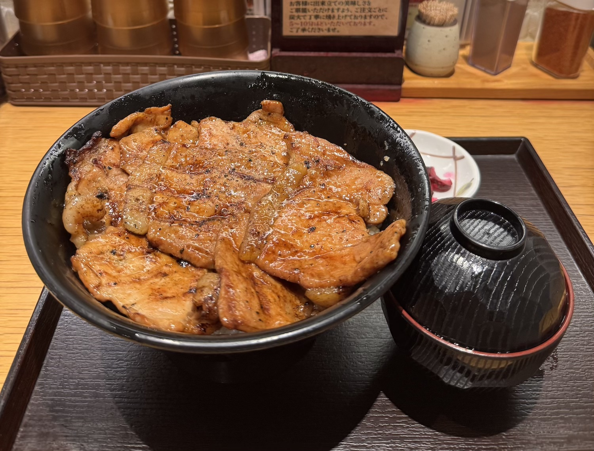
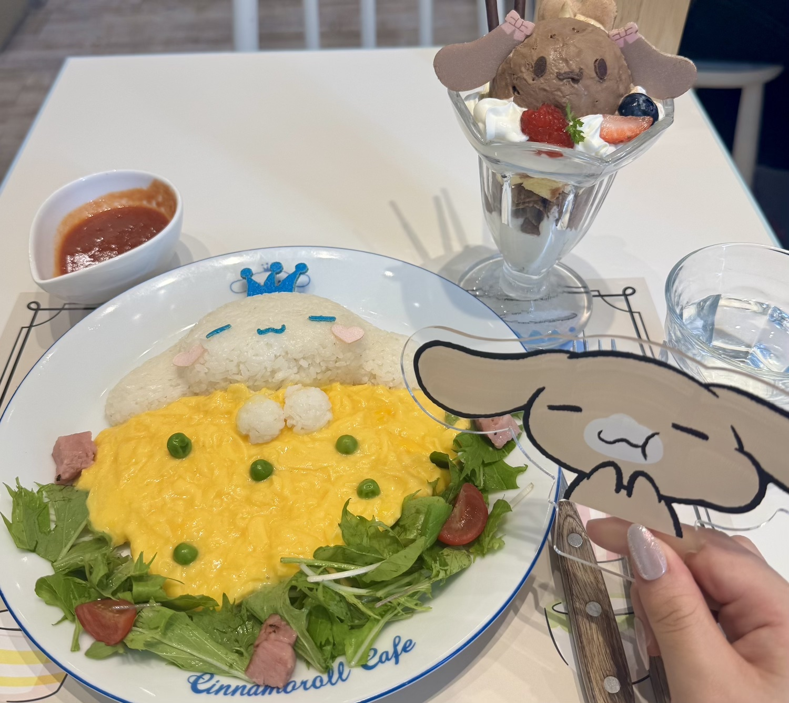
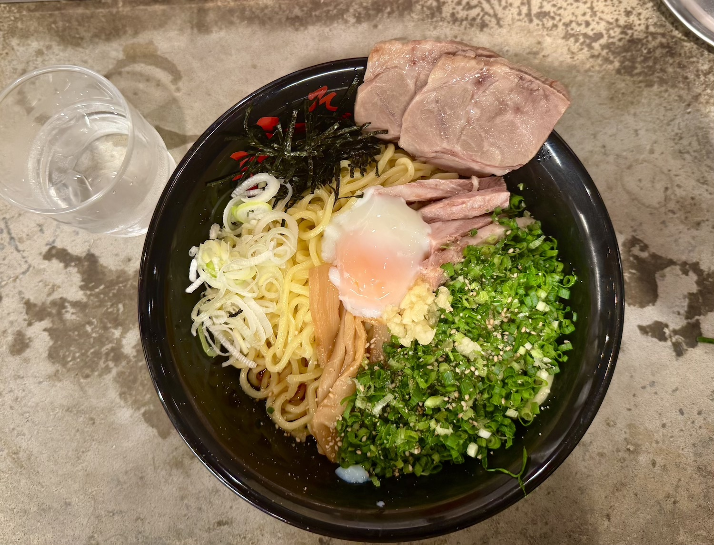
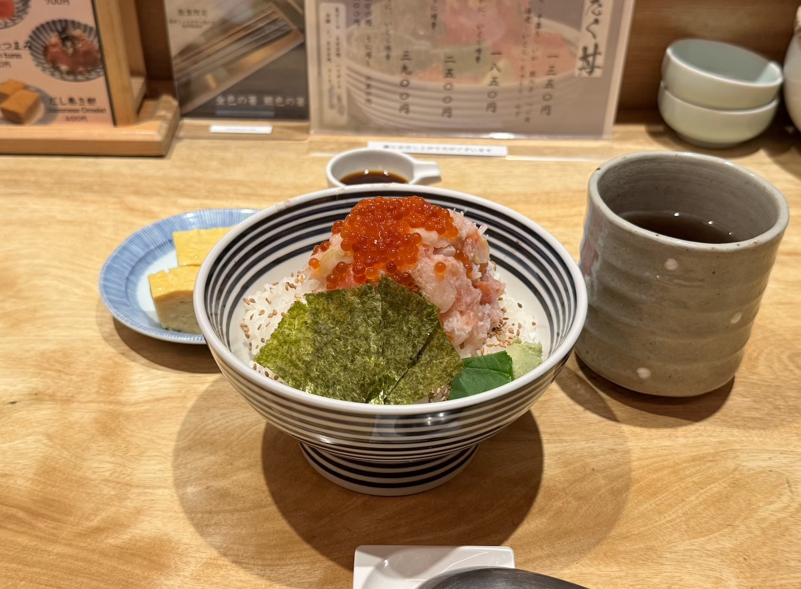
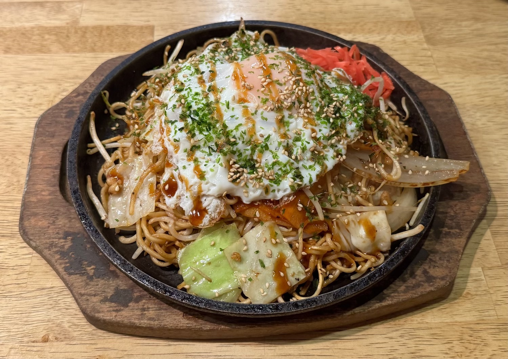
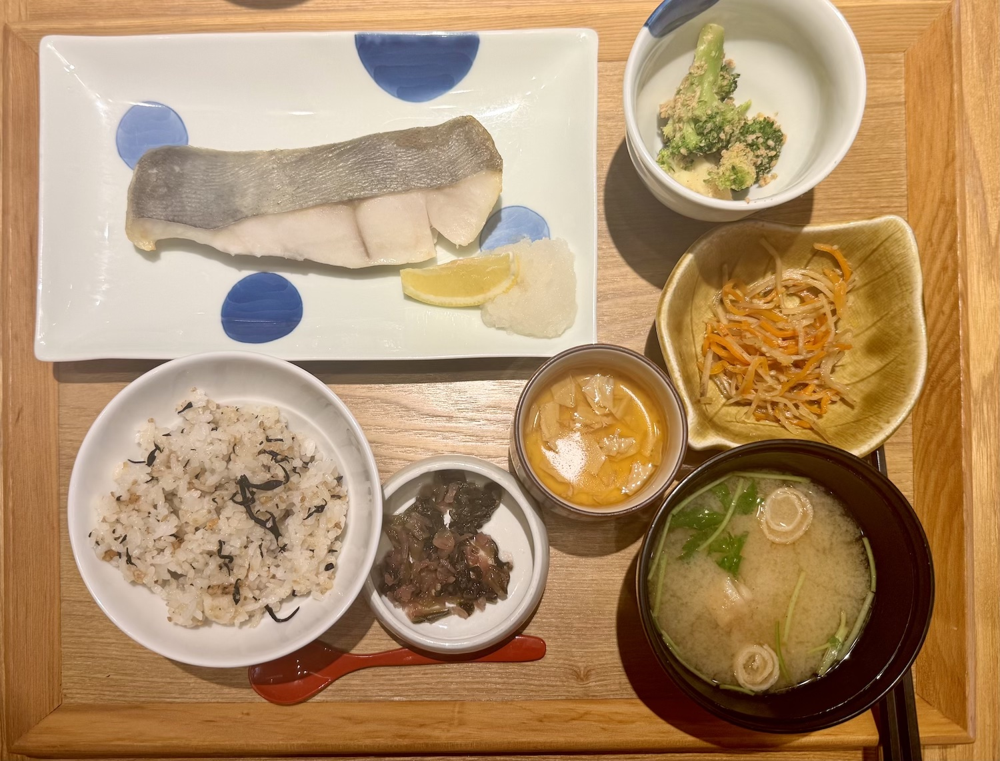
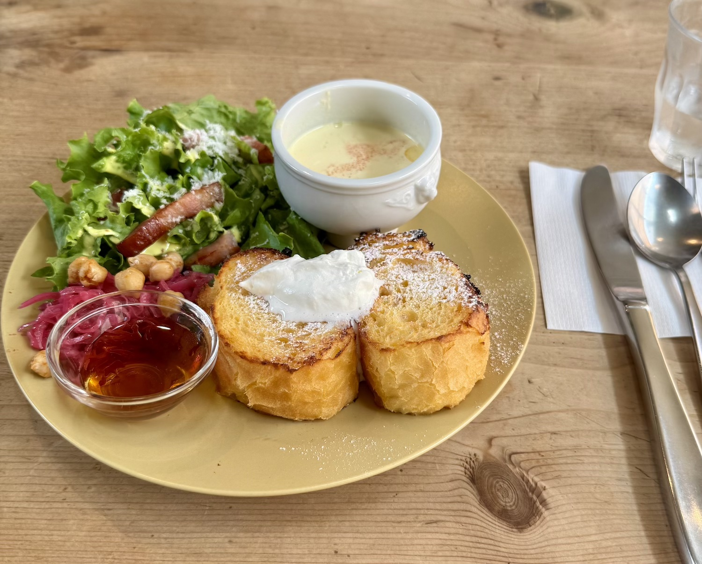

一日目 ロース豚丼

厚切りの豚肉に香ばしい炭火の風味が加わって、とても美味しかった。
二日目 シナモロールのオムライスとパフェ

放課後に新宿へ遊びに行ったときに見つけたシナモロールのレストランでランチをした。あまりにも可愛くて食べるのがもったいなかったけど、しっかり完食した。特別な味ではなかったけれど、可愛さに癒された時間だった。
三日目 油そば

初めて食べた油そばは思っていた以上に美味しかった。たまには食べに行きたいなと思った。一緒に行った友達は辛味噌味を頼んだんだけど、二人とも韓国人だから「どうせそんなに辛くないだろう」と思っていたら、本当に辛くてびっくりした。
四日目 海鮮丼

六本木に遊びに行った日に食べたご飯。有名なお店だと聞いて、オープン前から並んで入った。もともとイクラやマグロはあまり好きじゃなかったんだけど、この日以来は美味しく食べられるようになった。
五日目 広島風お好み焼き

広島風は初めて食べた。野菜や具材がたっぷりで美味しかった。
六日目 魚定食

漢字が難しくてどんな魚なのか分からないまま注文した定食だったけど、身がぷりぷりしていて美味しかった。いまだにあの魚の正体は分からない。もっと漢字の勉強を頑張らなきゃと思った。
七日目 フレンチトースト・ブランチ

韓国人の交換留学生の友達と下北沢に遊びに行ったときに食べたランチ。お店の雰囲気もよくて、楽しい時間だった。